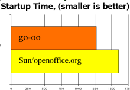
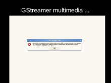
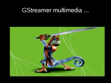
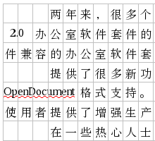
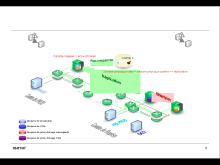
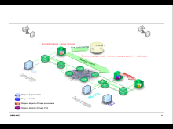

{kind=link}
{kind=link}
{kind=link}
{kind=link}
{kind=link}
{kind=link}
{kind=link}
{kind=link}
{kind=link}
{kind=link}
{kind=link}
{kind=link}
{kind=link}
{kind=link}
{kind=link}
{kind=link}
{kind=link}
open office
development
Here you'll discover what Go-oo has to offer in addition to the features you expect in up-stream OpenOffice.org
Go-oo provides a powerful & interoperable fields
implementation with
nesting,
in-place editing
,
multiple fonts &
nested conditionals
(sample doc)
Go-oo starts faster: (go-oo 2.1 vs. Sun/OO.o 2.3)
Go-oo can run in the background for a lightning second
start. See Tools -> Options -> Memory to enable.
Go-oo has a linear optimization solver
that can optimize a cell value based on
arbitrary constraints, built into Calc.
Go-oo supports multimedia content using
the GStreamer multimedia framework.
| Before | After |
|---|---|
|  |  |
Go-oo renders Chinese much more pleasantly, using a familiar text grid
(Download sample).
| Before | After |
|---|---|
|  |
Go-oo imports graphics in the WPG format coming from WordPerfect
which supplement the WordPerfect importer also available in Go-oo
(download sample file).
Go-oo renders EMF+ content, giving a far better view of embedded drawings.
| Before | After |
|---|---|
|  |  |
Of course, there are many other fixes and features included, too numerous to mention.